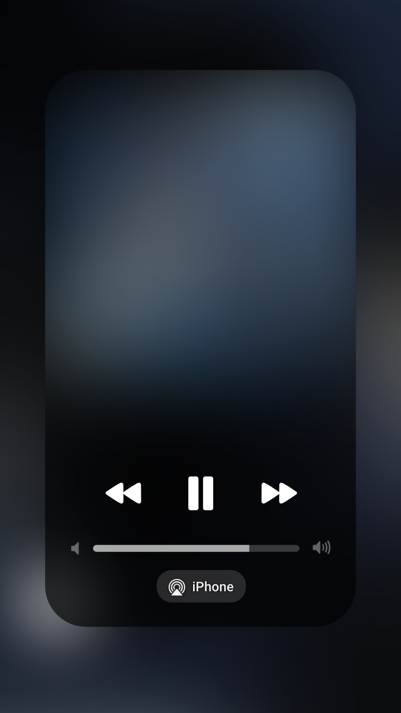

BREAGBEAT.
Fharid Rmx
0.00
– 0.00
FHARID RMX — Pengaturan
Pilih lagu
Pilih foto album
Judul lagu
Nama artis
● Rekam video
■ Berhenti
Pilih lagu jika perlu, lalu tekan Rekam video.
Simpan hasil video MP4
Fharid Rmx